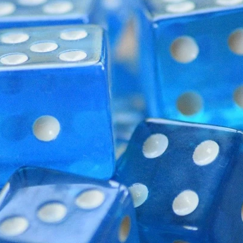

Guy
Character Sheet

Current:
- 🎓Finishing College: Got 4 courses left.
- 💻Job Hunting:
- 💪Working Out: I started weightlifting back in high school since we actually had a really nice weight
room. Funny story, I had it the first semester but got regular gym after that so I tried transfering.
Something got mixed up though and I was put in yoga. I walk into class to tell the teacher that I wanted
weightlifting when they greeted me right away. I thought it was strange they knew me immedietly. Then I
looked at the students which were 100% girls. Turns out yoga was a girls only class. I quickly got out of
there to talk to the office and my class got changed back to weightlifting the next day. Anyways I do
homegym now with dumbbells.
- 🕺Dancing: About to start taking hiphop dance classes and maybe breakdancing too. Would also love to
take some ballroom dancing classes and then find a gf and make one of those cute little dancing in various
places videos.
- 📖Learning Korean: I watch k-dramas sometimes and would also get in touch with my korean heritage. It
would also allow me to communicate with the koreans who keep speaking to me in korean assuming I understand
it.
- 🎶Music Production: I went through a songwriting phase for about a week and ended up with around
6000+ words worth of raps and songs. They'd sound a lot better with instrumentals so I'd like to learn to do
that.
- 📚Reading: I don't read nearly as much as I'd like to but I still do read. My to read list is
neverending so I can be suggested books but they'll probably just sit on my to read list for the next
decade. I read almost entirely non-fiction nowadays but I do really enjoy fiction when I do read it.
- ⌚Health Tracking: I wear an apple watch to track my sleep, exercise, and to recieve notifications.
Would love to make friends with people and share watch data for competitions and stuff again.
Interests:
- 🔬Pop Science: All my media feeds are filled with science and technology so I'm usually pretty up to
date with science and technology news. I usually have some cool facts to throw into conversation about
whenever.
- 🙂Stoicism: I am generally into all of philosophy. I watch a lot of pop philosophy videos. Some of my
favorite channels are Sisyphus 55, Philosophy Tube, and Wisecrack. But at the end of the day the philosophy
that I ended up with was stoicism. It's a very simple philosophy with a few correct general answers that you
can approach life with. Sometimes I read a thing and understand it but then upon revisiting it during a
rough time I find new meaning and see it in a new light.
- 🌸Anime/Manga: Being the gigantic nerd I am of course I consume anime and manga. Nowadays I read
manga a
lot more than anime but I still watch it from time to time especially nice as a social activity. Favorite
anime
of all time is either Mob Psycho Season 2 or Full Metal Alchemist: Brotherhood. Full Metal Alchemist was
written
by a girl too so that is just fantastic.
Other:
- ⛔💨Don't smoke: I've never liked smoking and I'm glad I don't. While I will conceed that smoking
looks very cool I'm not a fan.
- ⛔🍺Don't drink: "Moderate alcohol use is associated with decreased brain volume in early middle age
in both sexes". I'm capible of having fun without alchol and I might be allergic anyways.
- ⛔🥩Vegetarian: While my main reasoning is ethical, it's a hard point to argue and most people don't
care
anyways. So if I do talk about it at all it's all about the health benefits which are very easy to argue.
Old Hobbies:
- 🏊Swimming: I went to swimming school as a kid and graduated. Nothing too special here, I can swim
and would do so more frequently if I had easier access to a clean pool.
- 📝Memorizing Patter Songs: As a kid I saw a video of a guy singing yakko's world in a cod lobby and
thought it was the coolest thing ever. I then started memroizing it for the next month or two. Some other
kids joined in but I think I'm the only one that finished memorizing the whole thing. I think my cousin
memorized the elements song by ASAPScience because of that. I've also tried memorizing other songs like "One
Week", "The Elements by Tom Lehrer", "Wakko's America", "The Periodic Table Song by ASAPScience", and
probably a few others I forget but the only one I memorized to completion is Yakko's World. Honestly has
come in useful a lot less than I expected it to as a kid but I guess still a neat trick to pull out when
guessing where someone's from. Also when doing other difficult tasks I can sing it at the same time and make
things seem a bit more impressive.
- 🎤Rap: I think I actually like rap more than song writing. I definetly don't listen to it as much as
music but there's a greater emphasis on words than tune with rap. I can get a lot of words out there in a
smaller amount of time and I always have a lot to say. Maybe I should be trying to condense ideas but I find
myself storytelling a lot and it's easiest to rap that out because repetition isn't as big a problem in rap.
I also started memorizing patter songs from a young age so speaking quickly as in the style of rap is a
skill I've honed to some extent.
- 📝Song Writing: I got really into song writing for a bit and have a ton of unfinished songs written.
Need to go back and finish those one of these days.
- ⛸️Ice Skating: I actually started out with figure skates as a kid because I heard they were more
difficult to learn to use. A few years later I tried skating in them again but looking back I'm pretty sure
they were too small because I was having a ton of pain and trouble. We then picked up some rental skates and
it was a breeze after that.
- ⛷️Skiing: I've gone skiing once at big snow american dream. It was similar enough to ice skating that
I picked it up very quickly. I'd love to go to a resort one day once I have the money.
- 🏃Running: There was actually a point where I was training for a marathon. But that takes hours a day
of training and I got sick and I went through a rough period of life. Actually thinking about it I'm going
to go back to training and I'm gonna do a marathon one day in this life.
- 🤸Parkour: Was into it enough to learn how to do a safety vault and parkour roll. Once I have the
time and money I'd like to go to an actual gym to get actual training someday. The goal's to be able to do a
wallclimb.
- 🪕Gu Zheng: I played this for a bit when I was in my mid teens. Wasn't super into it but I can
probably still play something if you sat me down with it for an hour.
- 🍄Mushroom Hunting: During the fall and spring I like to go out on walks in the forest and look for
mushrooms. Only ate one so far and it was a puffball mushroom. Really delicious and looking for more!
- ♟️Chess: Currently ~1300 elo on lichess but planning on actually studying chess soon to raise my rank
to at least 1500.
- 🏐Volleyball: Honestly pretty amature at volleyball and can't do anything more advanced than an
overhand serve at about a 50% consistancy. Hoping to play more in the future though.
- 🥊Boxing: Went to a gym with the downstairs dedicated to MMA and practiced everything a little bit.
BJJ, kickboxing, judo, but nothing really beats boxing for me.
- 🧱Tetris: No competition against any normal casual person who's played tetris a few times in their
life but kind of middle of the pack in the world of people who actually play tetris. 41.7s 40 line record
which is technically top 5% on jstris but still means there's 7783 people better than me which means I'm not
winning any tournaments anytime soon.
- 🎲Board Games: I never really thought of this as a hobby. Thought everyone was into board games and
it was sometime people did as casually as watching TV. But apparently not. Anyways I've enjoyed "Splendor",
and "Red Rising" a lot. I tried to play wingspan but it was so incredibly complicated and the board took
nearly half an hour to set up at which point the group decided to just go get lunch.
- 🎮Video Games: As a guy in tech I am legally obligated to play video games. I was a hardcore gamer in
my younger days and played everything avalible on PC. The only genre I couldn't get into was grand strategy.
Was on a comp TF2 team, had over 1000 hours on CSGO but I just jumped around with a bizon so I never really
got that good but it was very fun and I was accused of hacking a few times. I now mostly play valorant
socially. Oh also I quit league of legends, not because it was toxic but because it was too addictive.
- 🥽VR: I got a Quest 2 before the price hike. I mostly play Onward if anything since I could never
figure out how to enjoy VRChat. I tried to use the headset for work but the resolution's still a bit too low
to use it comfortably.
- 🤺Fencing: I enjoyed it for a month or so but it's kind of an expensive hobby and I stopped going
after a while. I wasn't half bad at epee and would like to fence again someday.
- 📷Photography: Just now getting into photography with a cheap canon rebel. It really is incredible
how much better you can shoot on a proper camera than a phone. Currently reading "Understanding Exposure"
and "The Photographer's Eye" to learn more about it. Would love to find people to go on photoshoots with.
- 📝Writing: While I haven't worked on my novel in a while (it's an anthology set in a world where
different methods of death move you along a 2d multiversal grid) I have written a lot. I listen to a lot of
video essays and read a lot of internet content and books. And when I want to organize my thoughts I create
documents to do so.
Why the website name?
It's from a video I saw. Some guy checked out of a gas station on a card machine but instead of it saying the
normal "Have a good day!" or something of the sort, on a weekend evening at the ripe old hour of 7pm or so it
said "Have the best day of your life!". And it was funny to me and also captures mindfullness and carpe diem in
a nice way so I was surpised when the domain wasn't taken and I registered it.